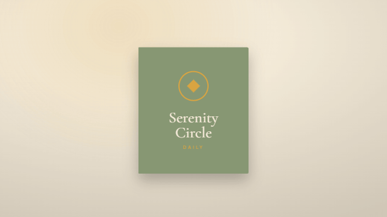

There Is Room to Talk About Something Else
A caring relationship can make room for recovery while also welcoming the interests and ordinary moments that belong to a whole person.
3 minute read

When addiction or sobriety has become a concern in a relationship, conversations can start circling the same subject. A check-in becomes the opening, the middle, and the goodbye. That attention may come from care. Still, someone who is sober, reducing harm, or considering change may also want to talk about a broken dishwasher, a favorite song, or something funny at work. Wanting that space is a reasonable relationship need.
In Alcoholics Anonymous’ Came to Believe, the contributor describes a spiritual life that brings greater involvement with other people and more enjoyment of existing talents. The passage gives ordinary activity its own significance: doing something becomes worth attending to. This offers a perspective on recovery in which a person’s interests remain part of their life. There is room to enjoy an ability without having to explain how that enjoyment relates to sobriety.
Adult Children of Alcoholics / Dysfunctional Families approaches relationships through a different emphasis. Adult Children of Alcoholics World Service Organization describes mutual respect, personal boundaries, and participation as an equal. Its discussion of putting other people’s wishes ahead of one’s own needs raises a useful concern here: someone can keep answering caring questions long after they would prefer to change the subject. Gratitude for concern does not erase that preference.
These passages have different purposes. Came to Believe offers a personal account shaped by prayer and a Higher Power; the ACA text describes a fellowship’s understanding of recovery and family patterns. Neither passage directly sets rules for everyday conversation. Read alongside each other, however, they suggest room for a relationship where attention to recovery coexists with equal standing and shared enjoyment. Readers can consider that possibility from within their own beliefs and chosen paths.
Imagine someone meeting a friend for lunch. The friend asks how sobriety is going, listens, and then asks several more questions. The person appreciates being remembered but had been looking forward to discussing a movie they both saw. They could say that they have shared what they want to share about recovery today and would enjoy talking about the film. That limit gives the friend specific information about how to spend the rest of their time together.
Such a boundary can be especially meaningful when concern has become the main way two people know how to connect. Changing the subject may feel unfamiliar to both of them. The caring person might need time to remember what else they share. An ordinary conversation can have value without supplying an update, demonstrating progress, or reassuring anyone. Shared curiosity deserves some space of its own.
There are also circumstances where recovery belongs in the conversation because a concrete issue affects both people. A request for a different topic does not settle a question about shared money, plans, or an agreement. Those concerns can be named specifically and given attention. Keeping them specific leaves more room around them: one unresolved matter need not become the subject of every exchange.
A relationship can include honest concern and evenings spent talking about completely ordinary things. The balance may change, and people may need to explain their preferences more than once. Within that ongoing conversation, a boundary around a topic can express a wish for companionship. There is someone here with tastes, opinions, abilities, and interests who would like to spend time with another person.
If you like, jot down one ordinary subject you would enjoy sharing with someone you care about.
What shared interest would you like to have more room for in a caring relationship?
Two books in conversation.
- 01
- 02
Adult Children of Alcoholics / Dysfunctional Families
We participate in life as an equal person.
About this source ↗
An original AI-generated reflection informed by these passages, with quotations checked against the source files. Interpretations can be imperfect. This site is independent of the authors and recovery fellowships cited, and does not provide treatment advice.